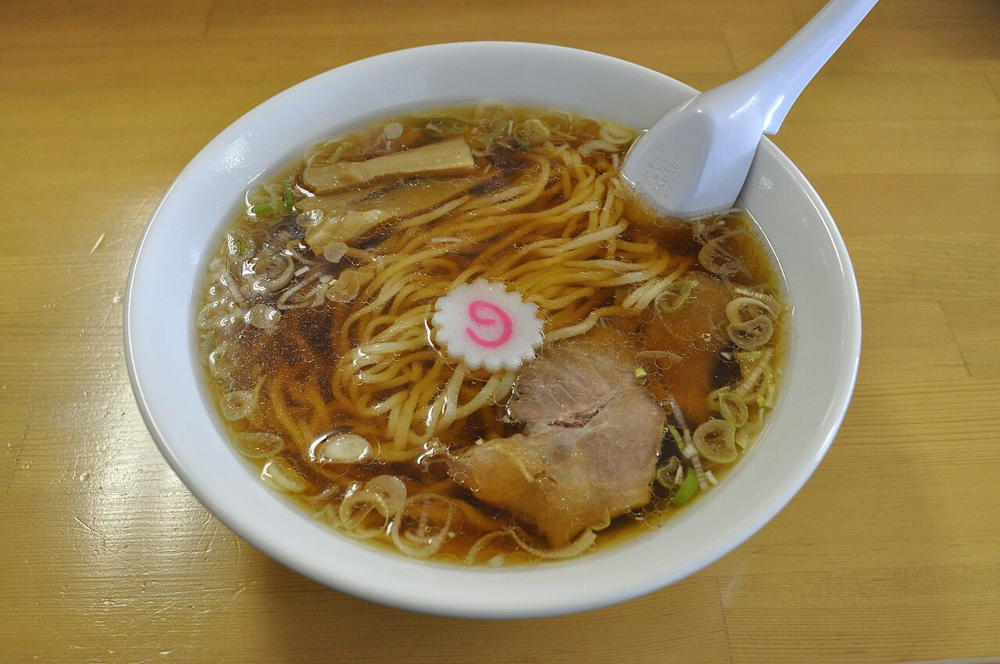
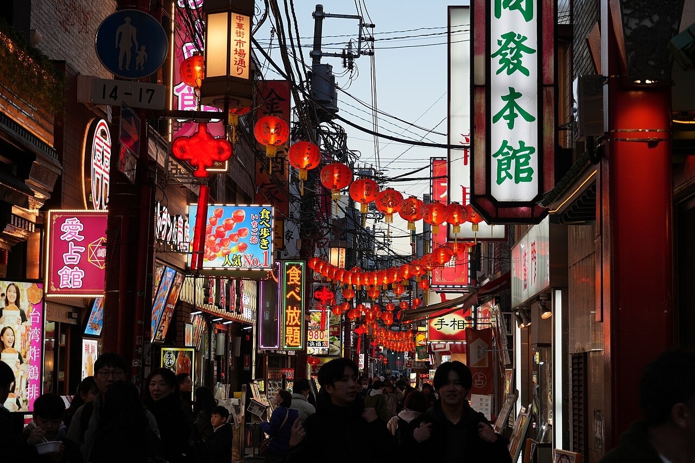
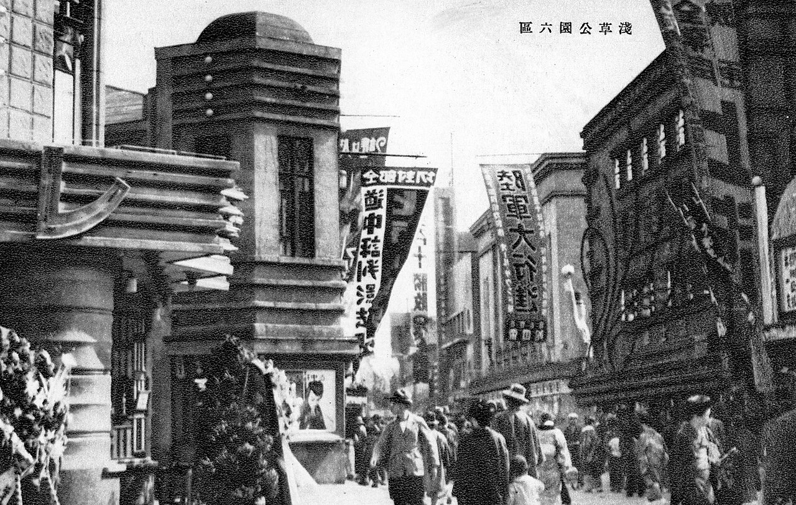
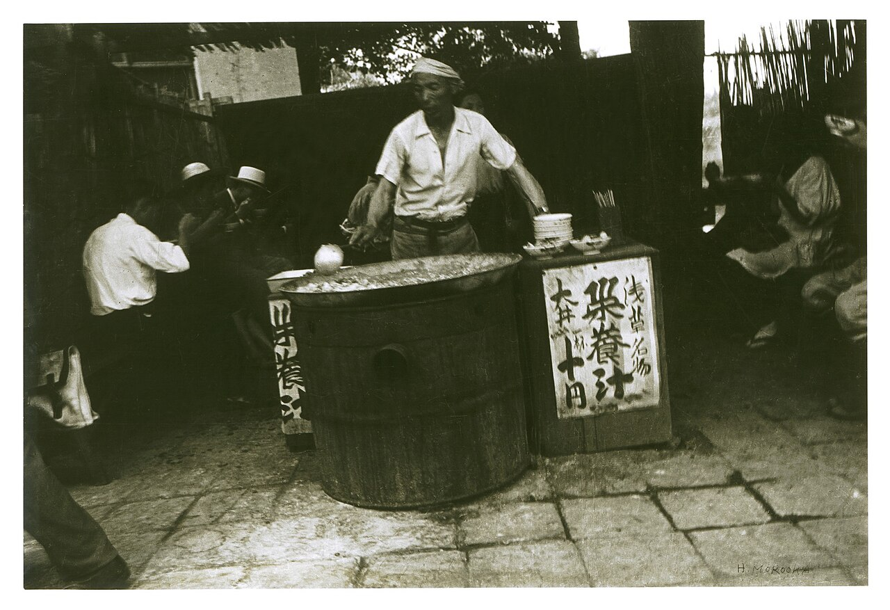
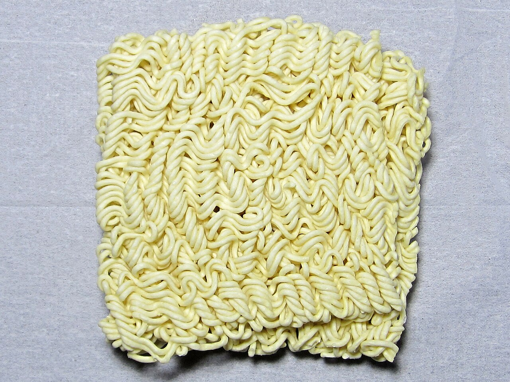
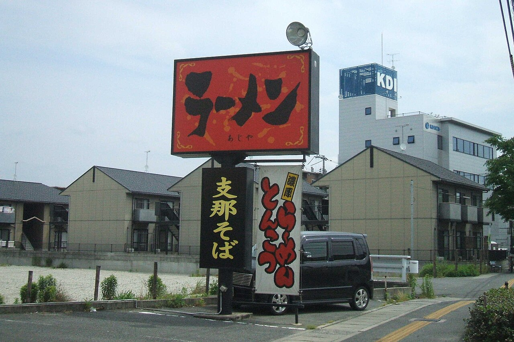
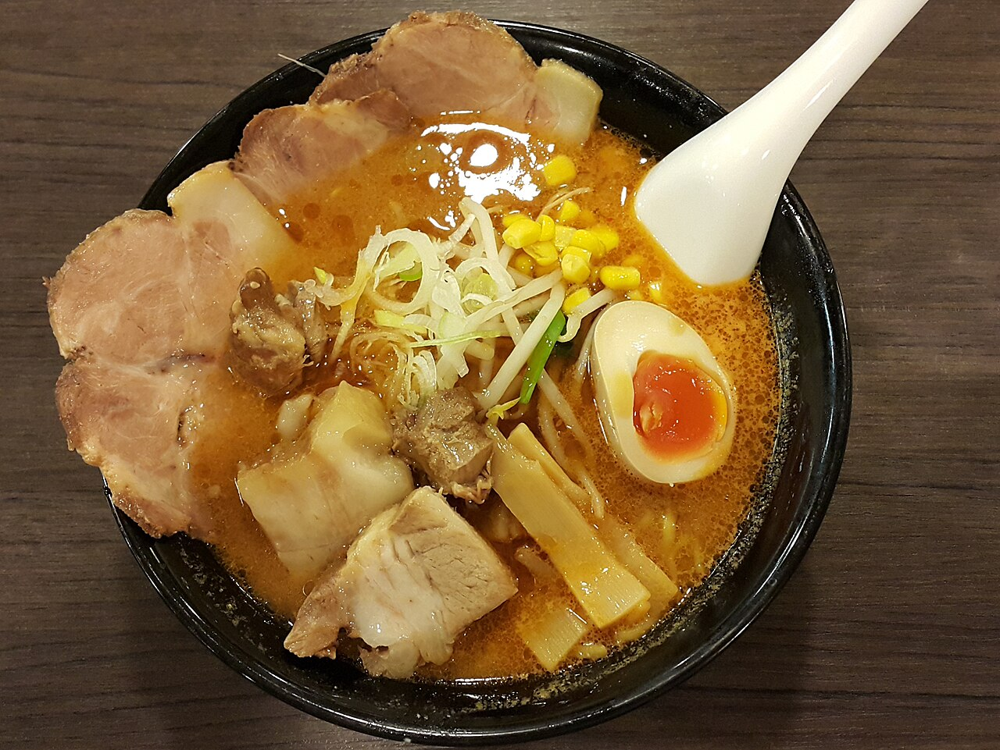
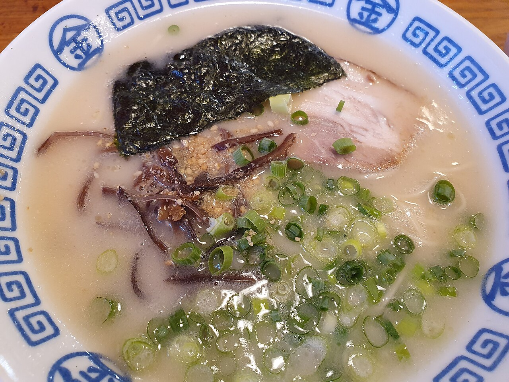
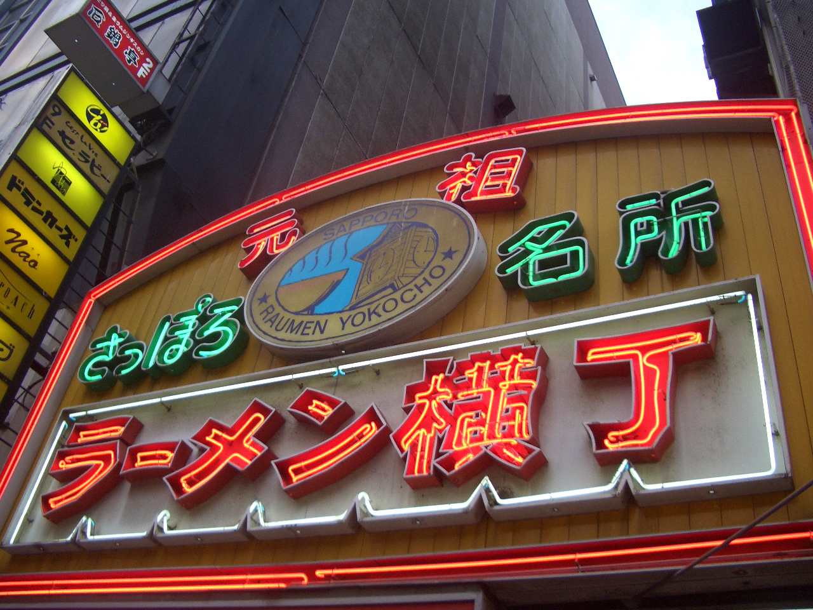

文化・暮らし Culture & Lifeラーメンは、どうやって日本の国民食になった？
港町で暮らす中国の人たちの麺料理が、いまでは日本中の町と家の台所にあります。浅草の一軒の店、戦後の屋台、お湯をかけるだけの即席麺。呼び名の年表とご当地ラーメンの地図で、その100年あまりをたどってみませんか。
2026.10.22 UP 約5分で読める 文：SOMOSOMO編集部
写真：Tsugaru ramen 001／Ocdp（2020年、CC0）
東京・浅草、1910年。横浜の税関をやめた尾崎貫一（おざき・かんいち）という人が、一軒の中華料理店「来々軒（らいらいけん）」を開きました。横浜の中国人街から広東（カントン）出身の料理人を12人呼び寄せ、看板の料理は醤油味のスープの麺。日本人の客に向けて作った店で、連日の行列ができたと伝えられています。
それから100年あまり。いまの日本では、即席麺だけでも1年に約59億食が食べられています（2024年）。けれども明治のころ、この麺を食べていたのは、ほとんどが日本で暮らす中国の人たちでした。外国の料理だった一杯が、どうやって日本の国民食 になったのでしょうか。
In a word
港町の中国の麺を日本人向けの醤油味 に変えた店が生まれ、戦後の小麦と屋台 が街に広げ、即席麺 が家の台所まで届けたから。
01
Port Town Noodles
始まりは、港町の「南京そば」
江戸時代の終わりに港が開かれると、横浜・神戸・長崎・函館には外国の人たちが住むようになります。横浜や神戸では、中国から来た人たちの住む一角が「南京町（なんきんまち）」と呼ばれ、故郷の味の麺料理を出す店や屋台ができました。
中国の人たちは、焼き豚をのせた麺、細切りの肉をのせた麺と、料理ごとに名前で呼んでいました。それを日本人は、まとめて「南京そば 」と呼びます。この「南京」は都市の名前というより、「中国から来た」という意味でした。

かつての「南京町」 いまの横浜中華街の路地。明治のころは南京町と呼ばれ、中国の人たちの店が集まっていました。写真は2025年の様子です。写真：Yokohama Chinatown Narrow Street 01 ／Tokyo538（2025年、CC0）
当時の客は、中国の人や中国から来た留学生が中心でした。日本人の多くにとって、豚の脂が浮いたスープはなじみのない味だったといわれます。そこに目をつけたのが、横浜育ちで中国の料理を身近に知っていた来々軒の尾崎でした。
来々軒は、スープを日本人になじみのある醤油味 にし、チャーシューやメンマ、ネギをのせました。呼び名も「支那（しな）そば」に変えます。「支那」は、当時の日本で中国を指して使われていた言葉です。来々軒は、日本人向けのラーメン店の始まりとする説が有力です。

来々軒があった町、浅草 1930年ごろの浅草六区（ろっく）。映画館や劇場が並ぶ東京一の盛り場でした。来々軒はこの浅草で、人々の手ごろな外食になっていきます。写真はイメージで、来々軒そのものは写っていません。写真：Rokku Broadway ／作者不明（1930年ごろ、パブリックドメイン）
来々軒の成功のあと、手ごろな中華料理店が各地に増え、支那そばは餃子やシュウマイと並ぶ定番になっていきます。1920年代には、札幌や福島県の喜多方（きたかた）にも、のちの名物につながる店が生まれました。ただ、まだ「外で食べる、ちょっと珍しい料理」でした。
02
After the War
戦争のあと、屋台が「街の味」にした
1945年、戦争に負けた日本は深刻な食べ物不足に見舞われます。この年の米は、40年あまりで最悪の不作でした。そこへアメリカから、安い小麦粉が大量に入ってきます。米の代わりに、パンや麺といった小麦の食べ物 が人々の暮らしに入りこみました。
国が食料を配る「配給」は遅れがちで、多くの人は闇市（やみいち）、つまり正式な許可のない市場の屋台で空腹を満たしました。そこで売られた料理の一つが、小麦の麺を使うラーメンでした。

戦後の屋台 1946年、浅草の屋台。占領軍の食堂の残り物を煮こんだ「栄養汁」を売っていました。ラーメンではありませんが、屋台で食べ物を売った時代の空気が伝わります。写真：Asakusa street stall in 1946 ／師岡宏次（1946年、パブリックドメイン）
屋台を開いたなかには、戦争が終わって中国大陸などから引き揚げてきた人たちもいました。現地で中国の麺料理を知っていた人も多く、少ない元手で始められる屋台は、新しい暮らしを立てる手段になりました。ラーメンと一緒に、餃子も広まっていきます。
1950年ごろに小麦粉の取り引きの制限がゆるむと、屋台はさらに増えました。麺や丼、はしまでをそろえた屋台の開業セット を貸す会社も現れます。夜の町をチャルメラ（小さなラッパ）を吹いて回る屋台は、昭和30年代までよく見られたといわれます。
呼び名も変わりました。戦後、「支那」という言葉は中国の人々を見下す響きを持つとして避けられるようになり、1946年には国も使うのを控えるよう求めます。こうして「支那そば」は「中華そば 」になっていきました。
03
Just Add Water
お湯をかけるだけで、家の台所まで届いた
1958年8月25日、大阪のサンシー殖産（のちの日清食品）の創業者・安藤百福（あんどう・ももふく）が、「チキンラーメン」を売り出しました。味をつけた麺を油で揚げて乾かすことで、お湯をかけるだけで食べられる ようにした、世界で初めての即席麺とされています。
値段は1袋35円。当時の乾麺のうどんやそば1玉の6倍ほどで、ぜいたく品でした。それでも、店に行かずに家でラーメンが食べられる手軽さが受けて、人気になります。そしてこの商品をきっかけに、「ラーメン 」という呼び名が全国に広まりました。

油で揚げて乾かした麺 袋入りの即席麺の中身。揚げるときに麺の水分が抜けて細かい穴ができ、お湯を注ぐとそこから水が入って、やわらかく戻ります。写真はイメージで、チキンラーメンではありません。写真：Typical instant noodles ／Ninosan（2012年、CC0）
1971年9月18日には「カップヌードル」が登場します。安藤がアメリカを訪ねたとき、人々が即席麺を割って紙コップに入れ、お湯を注いでフォークで食べるのを見たのがヒントだったとされます。容器がそのまま器になる即席麺は、やがて世界中に広まりました。
Fig.01 呼び名で見る、ラーメンの年表
1900 1950 2000
1870s– 南京そば 港町の南京町で、中国の人たちの麺をまとめてこう呼んだ 1910– 支那そば 浅草の来々軒が名付けたとされる。戦前に広く使われた 1946– 中華そば 戦後、「支那」の言葉が避けられて言いかえられた 1958– ラーメン チキンラーメンの登場で、全国に広まったといわれる
見どころは、赤い「ラーメン」の帯の長さ。いまでは当たり前の呼び名ですが、広く使われるようになってからは70年ほどです。帯の長さは年数に比例しています。区切りの年は「よく使われ始めた目安」で、実際には呼び名が重なっていた時期もあります。

いまも残る古い呼び名 岡山市のラーメン店の看板。「ラーメン」の下に「支那そば」とあります。店によっては、昔の呼び名をいまも看板に掲げています。写真：Shina Soba of Ramen shops ／Carpkazu（2010年、パブリックドメイン）
04
Local Flavors
同じ一杯が、町ごとに別の味に育った
ラーメンが全国に広まると、土地ごとに独自の味が育ちます。1937年には福岡県の久留米で、豚の骨を煮だした豚骨（とんこつ）スープの屋台が生まれたとされます。初めは澄んだスープで、いまのような白くにごったスープは戦後に生まれたといわれます。豚骨の味は、熊本や佐賀など九州の各地へ広がり、博多の豚骨にも影響したともいわれます。
札幌では1955年ごろ、ある店が味噌味のラーメン を考え出しました。雪の多い北海道の冬に合う、こってりとした一杯です。
福島県の喜多方では、大正の終わりに中国から来た青年が開いた店が始まりとされ、2006年の合併前の喜多方市には、人口約3万7,000人に対して120軒ほどの店があったといわれます。函館の塩、和歌山の豚骨醤油なども、町の名前で呼ばれる味です。
Fig.02 ご当地ラーメンの地図
札幌 味噌
函館 塩
喜多方 醤油
東京 醤油
和歌山 豚骨醤油
博多・久留米 豚骨
日本海
太平洋
見どころは、北と南で正反対のスープ。寒い北海道の札幌は味噌、九州の博多・久留米は白くにごった豚骨です。赤い字は、それぞれの町で知られる代表的な味。どの町にも、ほかの味の店はたくさんあります。海岸線は簡略化しています。


味噌と豚骨 左は味噌ラーメン、右は白い豚骨スープのラーメン。スープの色だけでも、ずいぶん違います。味噌と豚骨は撮影地が札幌・博多ではなく、写真はイメージです。写真：Bowl of miso ramen ／Douglas Perkins（2015年、CC0）、Tonkotsu ramen in Tokyo ／Syced（2021年、CC0）
土地の味を全国に知らせたのは、雑誌やテレビ、そして即席麺でした。1965年ごろから東京にも「札幌ラーメン」の看板を掲げる店が増え、袋麺の名前にも地名が使われます。1980年代には、各地の味が「ご当地ラーメン 」として旅の目的になりました。
1994年には横浜に、全国の名店の味を一か所で食べ比べられる「新横浜ラーメン博物館」が開きます。町ごとの違いそのものが、ラーメンの楽しみ方になったのです。

札幌のラーメン横丁 札幌・すすきのの「元祖さっぽろラーメン横丁」の入り口。細い路地に小さな店が並び、旅行者が名物の味を目当てに訪れます。写真：Hokkaido Ramen Street ／爵士迷（2007年、パブリックドメイン）
05
By the Numbers
即席麺は、いまや世界で1年に約1,230億食
日本で生まれた即席麺は、いまでは世界中で食べられています。世界ラーメン協会（WINA）の推計では、2024年に世界で食べられた即席麺は約1,231億食。日本は5位で、いちばん多いのは中国（香港を含む） です。
Fig.03 即席麺を多く食べる国・地域（2024年）
中国・香港 約438億食
インドネシア 約147億食
インド 約83億食
ベトナム 約81億食
日本 約59億食
見どころは、赤い日本の棒の短さ。生まれた国の日本は5位で、中国・香港の7分の1ほどです。即席麺は、ほとんどがその国で作られて、その国で食べられています。世界ラーメン協会（WINA）の推計によります。
約1,231億食 世界で1年に食べられた即席麺（推計）2024年、世界ラーメン協会（WINA）の推計
約59億食 そのうち、日本で食べられた量2024年、世界ラーメン協会（WINA）の推計
約48食 日本人1人が1年に食べる即席麺上の数字を2024年10月の総人口（約1億2,380万人）で割った計算
Here's the Fun Part
ここが面白い！
「ラーメン」という名前は、中国語の「拉麺（ラーミェン）」から来たといわれます。「拉」は引っ張るという意味で、生地を手で引っ張って細く伸ばす、中国の北のほう の麺の名前です。
ところが日本のラーメンの麺は、生地を薄く伸ばして包丁や機械で切って 作ります。ルーツは、横浜の中国人街に多かった広東の人たち、つまり中国の南のほう の汁そばでした。名前と中身は、もとは別の料理だったのです。
なぜ別の料理の名前がついたのかは、はっきりしていません。戦後、中国の北のほう（旧満州など）から引き揚げてきた人たちが、見た目の似た麺を現地の名前で呼んだという説がよく知られています。その名前を、チキンラーメンが全国に広めました。名前は北から、中身は南から。そして味は、日本の町で育ちました。
次にラーメン屋さんの前を通ったら、のれんや看板を見てみてください。「中華そば」「支那そば」「ラーメン」。その呼び名には、店が受けついできた時代が、少しだけ映っているかもしれません。
出典・参考
Ramen （英語版 Wikipedia）：南京そば・支那そば・中華そば・ラーメンの呼び名の変化、拉麺と広東の汁そば、来々軒（1910年、尾崎貫一、広東の料理人12人）、1945年の米の不作とアメリカの小麦粉、引揚者の屋台と餃子、1950年ごろの規制の緩和と屋台の開業セット、1947年の「ラーメン」の記録、味噌ラーメン（1965年ごろに全国へ）、1994年のラーメン博物館ラーメン （日本語版 Wikipedia）：開港地の南京町、「南京」の意味、来々軒の醤油味とチャーシュー・メンマ・ネギ、1946年の外務省事務次官通達と中華そば、チキンラーメンと「ラーメン」の呼び名、チャルメラの屋台（昭和30年代まで）、1937年の久留米の豚骨スープ久留米ラーメン （日本語版 Wikipedia）：1937年の屋台「南京千両」の透明な豚骨スープ、1947年の屋台「三九」で生まれた白くにごった豚骨スープ札幌ラーメン （日本語版 Wikipedia）：1955年の「味の三平」の味噌ラーメン、1965年ごろからの東京での広がり、即席麺の商品名喜多方ラーメン （日本語版 Wikipedia）：源来軒（1924年、潘欽星）、旧喜多方市の人口約3万7,000人と約120軒Momofuku Ando （英語版 Wikipedia）：1958年8月25日のチキンラーメン発売、35円でうどん・そばの約6倍、1971年9月18日のカップヌードル、アメリカで紙コップとフォークで食べる様子Instant noodle （英語版 Wikipedia）：世界初の即席麺としてのチキンラーメン、カップヌードル8月25日 即席ラーメン記念日 （nippon.com）：チキンラーメンの発売と1袋35円2024年インスタントラーメン世界総需要は1230.7億食 過去最高を更新 （世界ラーメン協会、共同通信PRワイヤー、2025年）：2024年の世界の需要と国・地域別の数字（中国・香港438.0億食、日本59.0億食ほか）人口推計（2024年10月1日現在） （総務省統計局）：日本の総人口 約1億2,380万人写真：Tsugaru ramen 001 ／Ocdp（2020年、CC0）。青森市の店の中華そば。本文中の写真のクレジットは、それぞれの写真の下に記しています（いずれも CC0 またはパブリックドメイン）